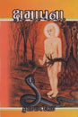
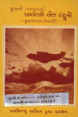
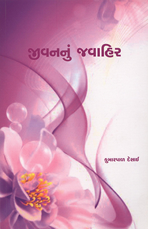
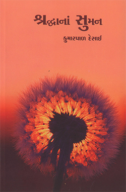
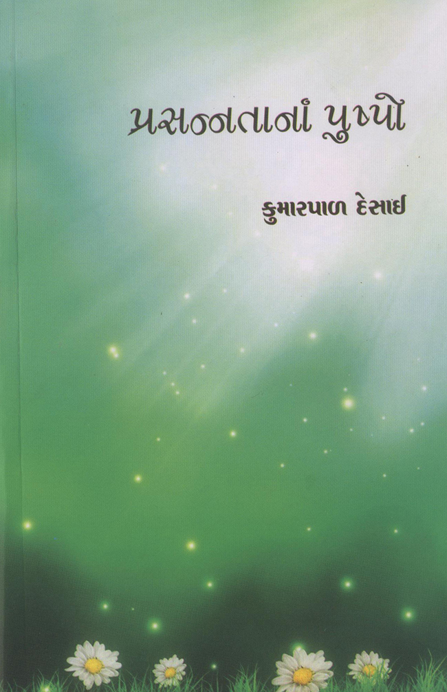

ચિંતન સાહિત્ય
ઝાકળભીનાં મોતી ભાગ ૧-૨-૩ (૧૯૮૩) ; મોતીની ખેતી (૧૯૮૩) માનવતાની મહેંક (૧૯૮૪) ; તૃષા અને તૃપ્તિ (૧૯૮૬) ; ક્ષમાપના (૧૯૯૦) ; શ્રદ્ધાંજલિ (૧૯૯૪) ; જીવનનું અમૃત (૧૯૯૬) ; દુઃખની પાનખરમાં આનંદનો એક ટહુકો (૧૯૯૭) ; મહેક માનવતાની (૧૯૯૭) ; ઝાકળ બન્યું મોતી (૧૯૯૮) ; સમરો મંત્ર ભલો નવકાર (૨૦૦૦) ; ક્ષણનો સાક્ષાત્કાર (૨૦૦૮) ક્ષણનો ઉત્સવ (2016) પ્રસન્નતાના પુષ્પો (2016) જીવનનું જવાહિર (2016) શીલની સંપદા (2016) મનની મિરાત (2016) |
||
|  |
જૈન ધર્મમાં જેને સૌથી શ્રેષ્ઠ ગણવામાં આવી છે તે ક્ષમા છે. અને તે ક્ષમા વિશેની જૈનદર્શનની વિચારધારા અન્ય ધર્મોની તુલાનાત્મકતા સાથે આલેખી છે. જૈન ધર્મના સિદ્ધાંતોને લોકભોગ્ય અને પ્રમાણભૂત રીતે આલેખ્યા છે. આ પુસ્તકની શૈલી વિશેષ ધ્યાન ખેંચે છે. |
|
|  |
ચિંતનસભર આલેખન કરતું પુસ્તક છે. મહાન વ્યક્તિઓના જીવન પ્રસંગો અહીં આલેખાયા છે. પ્રસંગો સંક્ષિપ્ત પણ હૃદયસ્પર્શી છે. આ પુસ્તક સાચા અર્થમાં દુઃખની પાનખરમાં આનંદના ટહુકાથી ભર્યું ભર્યું છે. |
|
ટૂંકા ટૂંકા ચિંતન ખંડોમાં વહેતી ચિંતનધારા છે. વ્યવહાર જગતના વિષયોથી માંડીને આધ્યાત્મિક જગતના ગૂઢ ભાવોને આવરી લેતો આ ચિંતન પ્રવાહ છે. એમાં લેખનો વિશિષ્ટ દ્રષ્ટિકોણ, મૌલિક અભિગમ અને હૃદયસ્પર્શી રજૂઆત ધ્યાન ખેંચે છે. |
||
|  |
‘એક જ દે ચિનગારી’ અને એવી એક ચિનગારી મળી જતાં જીવન આખુંય પ્રકાશથી હર્યુંભર્યું બની જાય છે. કોઈ પ્રસંગ એવો મર્મસ્પર્શી બની રહે છે કે જે મનની વિચારધારાને પલટી નાખે છે. એવી કોઈ ઘટનામાંથી મળતી જીવનસમજણ જિવાતા વર્તમાન જીવનને નવો વળાંક આપે છે. આવા જીવન અને અધ્યાત્મમાર્ગમાં પ્રસન્નતા અર્પતાં પુષ્પોની આ માળા છે. એમાં ક્યાંક મૌલિક વિચારધારા છે, તો ક્યાંક ચિંતનની ચિનગારી છે, પરંતુ એ બધી જ અંતે તો વાચકના જીવનપથને ઉજમાળતો પ્રેરણાદીપનો પ્રકાશ આપી રહે છે. |
|
|  |
આપણાં સઘળાં માનવમૂલ્યો આજે દ્રાવણપાત્રમાં આવીને ઠર્યાં છે ત્યારે ઉચ્ચ અને ઊર્ધ્વ ભાવનાથી મનુષ્યજાતિમાં શ્રદ્ધાની સુગંધ પ્રગટાવતા પ્રસંગો આમાં આલેખ્યા છે. આ પ્રસંગોમાંથી ક્યાંક કોઈ નાનકડું પણ પ્રભાવશાળી ચિંતન મળશે તો ક્યાંક માનવીય સંબંધોને સ્પર્શ કરે તેવા વિચારો મળશે. આ પ્રસંગો તે એક પ્રકારે દીવાદંડીના પ્રકાશ જેવા છે. જે જીવનનૌકામાં સફર કરતા માનવીઓના જીવનને સાચી ગતિ અને દિશા અર્પે છે. |
|
|  |
સામાન્ય રીતે આપણા દેશમાં ભારતના મહાપુરુષો, સંતો લોકસેવકો, નેતાઓ વિશેના ઘણા પ્રસંગો મળે છે, પણ આ રીતે વિદેશના વિજ્ઞાનીઓ, વિચારકો, સર્જકો, ચિત્રકારો, નેતાઓ અને લોકસેવકોના જીવનપ્રસંગ આલેખતાં પુસ્તકો મળતાં નથી અને સામાયિકોમાં પણ આવાં પ્રસંગો ક્વચિત્ પ્રકાશિત થાય છે, ત્યારે આ પુસ્તકમાં વિદેશના આવા મહાપુરુષોનાં ચરિત્રમાંથી પ્રેરક પ્રસંગો આપવામાં આવ્યા છે. સાથોસાથ એ વ્યક્તિના વ્યક્તિત્વની અને કાર્યક્ષેત્રની પણ થોડી ઝાંખી આપવામાં આવી છે. |
|
શ્રી કુમારપાળ દેસાઈ પાસેથી ગંભીર તાત્ત્વિક વિચારણાથી માંડીને પ્રસંગાનુસારી કે શાસ્ત્રીય ચિંતન વ્યક્ત કરતાં ચૌદેક પુસ્તકો પ્રાપ્ત થયાં છે. તેમનું ચિંતન શુષ્ક અને શાસ્ત્રીય ન બની રહેતાં તેની તાજગીપ્રદ રમતિયાળ શૈલીને કારણે આસ્વાદ્ય અને હૃદયંગમ બની શક્યું છે. તેમના જીવનમાં જે સરળતા અને સાહજિકતા છે તે તેમના આ પ્રકારના સાહિત્યમાં પણ દ્રષ્ટિગોચર થાય છે. |